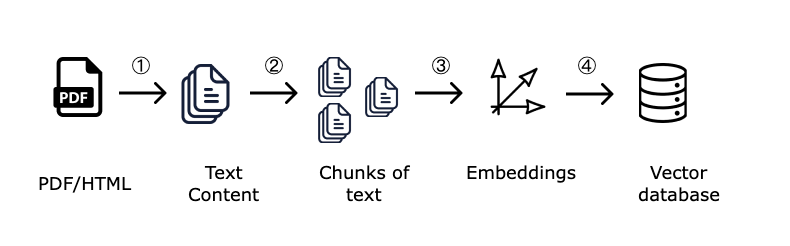

The Indexing Pipeline: Preparing Your Data

- Step 1: Data Loading The first step is to load your documents from various sources. Sources can include text files, PDFs, websites, databases, or APIs like Notion and Confluence.
- Step 2: Chunking (or Splitting) Documents are broken down into smaller, semantically meaningful chunks. This is crucial because LLMs have context window limits, and smaller chunks provide more targeted context for retrieval.
- Step 3: Embedding & Storing Each chunk of text is converted into a numerical vector (an "embedding") using an embedding model. These vectors are then stored in a specialized database called a Vector Database for efficient searching.